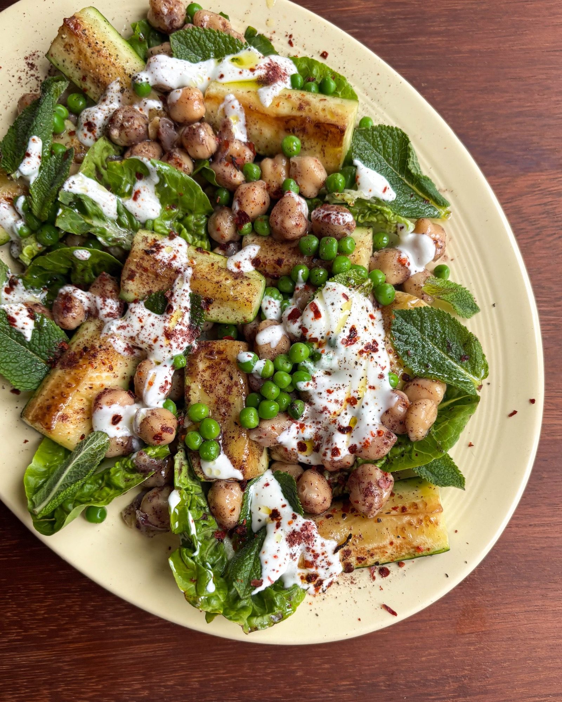

Charred Courgette + Sumac Chickpea Salad with Garlicky Lemon Yoghurt
Griddled courgettes and sumac-tossed chickpeas with petit pois and baby gem, dressed in a garlicky lemon yoghurt.

Ingredients
Salad
Lemony yoghurt dressing
Method
- Brush the 3 courgettes with the 2 tbsp olive oil and season with a good pinch of salt.
- Heat a griddle pan over a high heat.
- Cook the courgettes for 3-4 minutes on each side, until deeply charred and tender, then set aside.
- Meanwhile, toss the drained 660g jar of chickpeas with the 1 tbsp sumac and a pinch of salt until evenly coated.
- Mix the 3 heaped tbsp Greek yoghurt, the juice of 1 lemon and half its zest, the 1 grated garlic clove and the 1 tbsp olive oil together in a small bowl.
- Season the dressing to taste, adding more lemon if you like it sharp.
- Tumble the courgettes, chickpeas, 70g petit pois and the leaves of the 2 baby gem lettuces into a large bowl or onto a serving platter.
- Drizzle over the dressing.
- Scatter with the 30g mint and basil leaves and the 1 tsp chilli flakes.
Notes
The courgettes are even better charred on a barbecue.
Serve alongside grilled halloumi to make more of a meal of it.